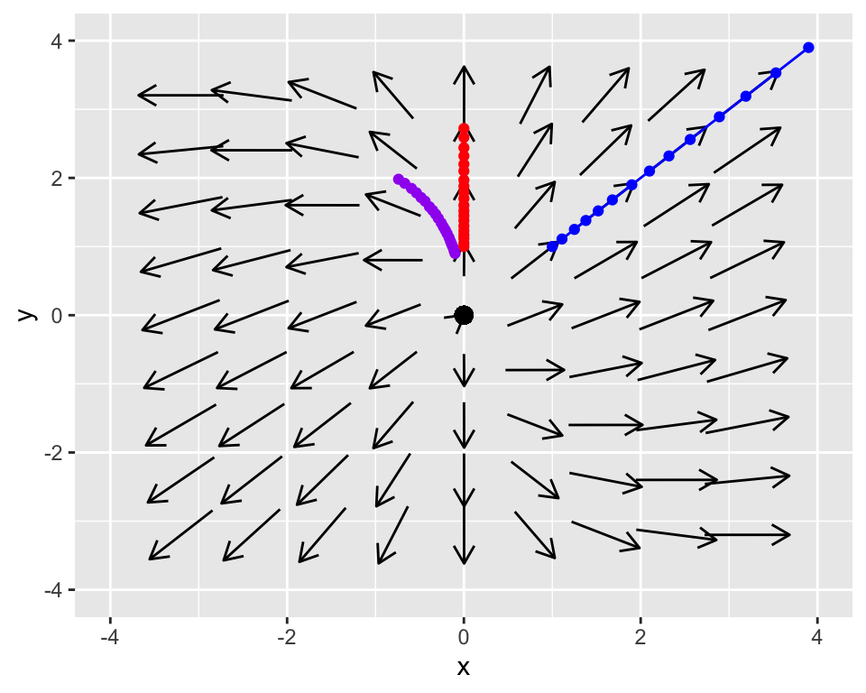

2.3 Stability of solutions
Because we have already identified the equilibrium solution for Equation (2.1), the focus is to understand if the equilibrium solution is stable or unstable. There are two other (non-equilibrium) solutions to this system of differential equations:
- Solution 1: \(x=0\) and \(y =e^{t}\)
- Solution 2: \(x=e^{2t}\) and \(y=e^{2t}\)
We can make a table of the solution for different values of \(t\):
|
Solution 1
|
Solution 2
|
|||
|---|---|---|---|---|
| t | x1 | y1 | x2 | y2 |
| 0.00 | 0 | 1.00 | 1.00 | 1.00 |
| 0.05 | 0 | 1.05 | 1.11 | 1.11 |
| 0.11 | 0 | 1.12 | 1.25 | 1.25 |
| 0.16 | 0 | 1.17 | 1.38 | 1.38 |
| 0.21 | 0 | 1.23 | 1.52 | 1.52 |
| 0.26 | 0 | 1.30 | 1.68 | 1.68 |
| 0.32 | 0 | 1.38 | 1.90 | 1.90 |
| 0.37 | 0 | 1.45 | 2.10 | 2.10 |
| 0.42 | 0 | 1.52 | 2.32 | 2.32 |
| 0.47 | 0 | 1.60 | 2.56 | 2.56 |
| 0.53 | 0 | 1.70 | 2.89 | 2.89 |
| 0.58 | 0 | 1.79 | 3.19 | 3.19 |
| 0.63 | 0 | 1.88 | 3.53 | 3.53 |
| 0.68 | 0 | 1.97 | 3.90 | 3.90 |
| 0.74 | 0 | 2.10 | 4.39 | 4.39 |
| 0.79 | 0 | 2.20 | 4.85 | 4.85 |
| 0.84 | 0 | 2.32 | 5.37 | 5.37 |
| 0.89 | 0 | 2.44 | 5.93 | 5.93 |
| 0.95 | 0 | 2.59 | 6.69 | 6.69 |
| 1.00 | 0 | 2.72 | 7.39 | 7.39 |
We can incorporate the information from the table with the phase plane:

Do you notice the motion in the \(xy\) plane of the two solutions? They are straight lines! It turns out that these straight lines solutions are quite useful - we will study them in a later section. But for the moment we will apply the idea of linear combinations to plot another solution, where \(\vec{z}(t)=\vec{x}_{1}(t) -0.1 \vec{x}_{2}(t)\):

The phase plane suggests that the equilibrium solution at the origin is unstable because both the arrows and the solution seem to be pointing away from the origin. We can also investigate stability algebraically for each solution (\(s_{1}(t)\) and \(s_{2}(t)\)). We will organize our solutions in vector format, factoring out the exponential functions in each of the expressions:
Let’s look at this more systematically:
- Solution 1: \(\displaystyle \vec{s}_{1}(t) = \begin{pmatrix} 0 \\ e^{t} \end{pmatrix}= \begin{pmatrix} 0 \\ e^{t} \end{pmatrix} =e^{t} \begin{pmatrix} 0 \\ 1 \end{pmatrix}\).
- Solution 2: \(\displaystyle \vec{s}_{2}(t) = \begin{pmatrix} e^{2t} \\ e^{2t} \end{pmatrix}= \begin{pmatrix} e^{2t} \\ e^{2t} \end{pmatrix} = e^{2t} \begin{pmatrix} 1 \\ 1\end{pmatrix}\).
By factoring out the exponential functions we can see the straight line solutions! The vectors \(\displaystyle \begin{pmatrix} 0 \\ 1\end{pmatrix}\) and \(\displaystyle \begin{pmatrix} 1 \\ 1\end{pmatrix}\) are the lines \(x=0\) and \(y=x\), as shown in our phase plane diagrams with the red and blue lines respectively.
To investigate stability we investigate the long term behavior of the exponential functions. Notice that \(\displaystyle \lim_{t \rightarrow \infty} e^{t}\) and \(\displaystyle \lim_{t \rightarrow \infty} e^{2t}\) both do not have a finite value, so we classify the equilibrium solution as “unstable.”
So to recap the following about straight line solutions to two-dimensional linear systems:
Straight line solutions have the form \(\displaystyle \vec{s}(t) = e^{\lambda t} \vec{v}\). Methods to determine \(\lambda\) and \(\vec{v}\) will be studied in later sections.
For a 2 dimensional linear system, you have generally will two straight line solutions \(\vec{s}_{1}\) and \(\vec{s}_{2}\). This means you will have two different values of \(\lambda\) (\(\lambda_{1}\) and \(\lambda_{2}\)). The general “solution” to the system of differential equations is the linear sum of the two: \(\vec{x}(t) = c_{1} \vec{s}_{1}(t) + c_{2} \vec{s}_{2}(t)\).
Geometrically these straight line solutions are lines that passing through the origin in the \(xy\) plane.
If both values of \(\lambda\) are greater than 0, equilibrium solution is unstable.
If both values of \(\lambda\) are less than 0, equilibrium solution is stable.
In the exercises you will look at additional examples to understand the behavior of linear systems.